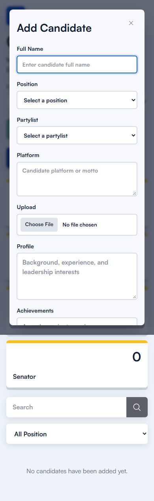
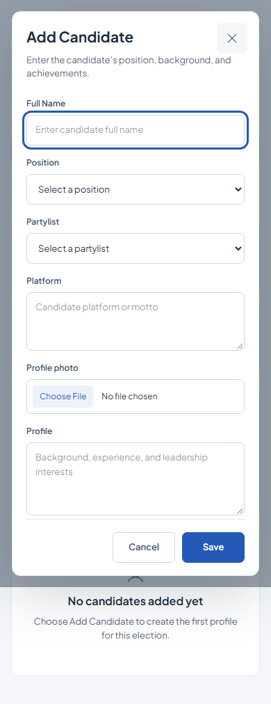

CPC Vote · Admin suite
Extended the light Election desk direction to Votes, Manage Voters, Manage Candidates and admin login. The shared navigation, typography, controls and semantic status colours now form one admin workspace. CPC Vote branding is retained. The dashboard’s data and layout are preserved.
What changed
- Votes: compact team totals, position filters and print control; meaningful no-result state. Candidate names and vote counts sit outside the bars so they remain readable on small screens. Existing ranking and bar-width calculations remain unchanged.
- Voters: visible search/status labels, restrained table styling and explicit loading/error/empty states. Phones show all five fields in each record without requiring sideways scrolling.
- Candidates: compact position totals, grouped election/action controls, visible filter labels and simpler profile cards. A native modal provides focus containment and restores focus when dismissed. Existing fields, save/delete/activation handlers, confirmation prompts and permission rules remain intact.
- Admin login: light layout, existing wordmark, visible email/password labels, password visibility control and clear pending/error states. The existing login request, validation constraints, session storage and redirect remain unchanged.
Data and scope: Existing services, hooks, route URLs, permission guards, backend code, voter pages and public pages are preserved. The router now rechecks stored session state on navigation, fixing a reproduced blank login after logout following a refresh. No election records were changed during verification. The real election remains a draft with no candidates or votes, and four enrolled voter records.
Measured layouts
| Screen | Width | Page heading · before → after | Document height · before → after | Horizontal page overflow |
|---|
| Admin login | 1440px | — → — | 900 → 900px | 0 → 0px |
|---|
| Admin login | 768px | — → — | 1024 → 1024px | 0 → 0px |
|---|
| Admin login | 390px | — → — | 844 → 844px | 0 → 0px |
|---|
| Votes | 1440px | 52px → 26px | 900 → 900px | 0 → 0px |
|---|
| Votes | 768px | 41.6px → 26px | 1024 → 1024px | 0 → 0px |
|---|
| Votes | 390px | 41.6px → 24px | 844 → 844px | 0 → 0px |
|---|
| Voters | 1440px | 60.48px → 26px | 900 → 900px | 0 → 0px |
|---|
| Voters | 768px | 44.8px → 26px | 1024 → 1024px | 0 → 0px |
|---|
| Voters | 390px | 44.8px → 24px | 863 → 1227px | 0 → 0px |
|---|
| Candidates | 1440px | 53.6px → 26px | 900 → 900px | 0 → 0px |
|---|
| Candidates | 768px | 42.4px → 26px | 1024 → 1024px | 0 → 0px |
|---|
| Candidates | 390px | 42.4px → 24px | 1263 → 1012px | 0 → 0px |
|---|
These are browser DOM measurements, not task-time or user-study results. The mobile Voters page is deliberately taller because it exposes all five fields per record. The visual assessment that the screens are calmer and easier to scan is subjective.
Admin login
1440px · Before / after
768px · Before / after
390px · Before / after
Votes
1440px · Before / after
768px · Before / after
390px · Before / after
Voters
1440px · Before / after
768px · Before / after
390px · Before / after
Candidates
1440px · Before / after
768px · Before / after
390px · Before / after
Candidate dialog
Before · 390px
After · 390px
The form scrolls to Profile and Achievements, with Cancel/Save kept accessible. Verification entered temporary form text and cancelled; no candidate save was sent.
Verification
Frontend lint, typecheck and production build passed. Browser checks: passed.
- Protected management page still requires admin authentication
- Login required fields and email validation remain active
- Admin password visibility toggle works
- Real invalid credentials display an accessible error
- Real login preserves session creation and dashboard redirect; pending state prevents repeat submission
- All admin navigation routes, selected states, mobile Escape/focus isolation and overflow at 1440px
- All admin navigation routes, selected states, mobile Escape/focus isolation and overflow at 768px
- All admin navigation routes, selected states, mobile Escape/focus isolation and overflow at 390px
- Votes All filter, existing print action and print layout remain functional
- Empty vote results link reaches candidate management
- Voters name/ID search, submit/Enter, empty result, status filtering and all five fields work with real records
- Candidate search/position filters and real election picker preserved; incomplete election stays non-activatable
- Candidate dialog fields, required validation, scroll reachability, Cancel, Escape, close and focus return at 1440px; no save sent
- Candidate dialog fields, required validation, scroll reachability, Cancel, Escape, close and focus return at 390px; no save sent
- Candidate backdrop dismisses dialog and restores page scrolling
- Candidate fetch failure displays error instead of empty-record success
- Voter fetch failure displays an honest error state
- Votes retains existing API error handling
- Logout clears admin session and login switch reaches unchanged student login
- No election mutation requests or browser runtime errors
Invalid login state · Candidate API error · Voter API error · Exact verification results
Regression checks
The dashboard screenshot has 0 changed pixels compared with the previous redesign, at the same dimensions. Its real API response is unchanged.
- Existing dashboard response is unchanged; layout dimensions preserved; pixel difference recorded
- Logout after a refreshed authenticated page renders the actual admin login, fixing the reproduced stale redirect
- Real student login and read-only ballot/candidates/tally navigation still work, with no admin styling applied
- Student logout after refresh renders student login; admin route remains guarded
- Public home remains separate from admin styling
Exact regression results
Remaining limitations
- Real election is a draft with no candidates or votes: populated vote rows and candidate Edit/Delete were source-reviewed but not exercised against real records. No candidates were created, saved or deleted, no election activated, no votes cast.
- Only one real election exists, so switching between different elections could not be tested.
- Viewport emulation is not a physical-device or screen-reader audit.
The installed Taste skill lacks the requested app-screen reference and --app script support, as established during the dashboard redesign. This continuation uses the same explicitly reported app-focused fallback, real authenticated browser screenshots and visual refinement. Product Design was not used.
Baseline measurements · Final measurements